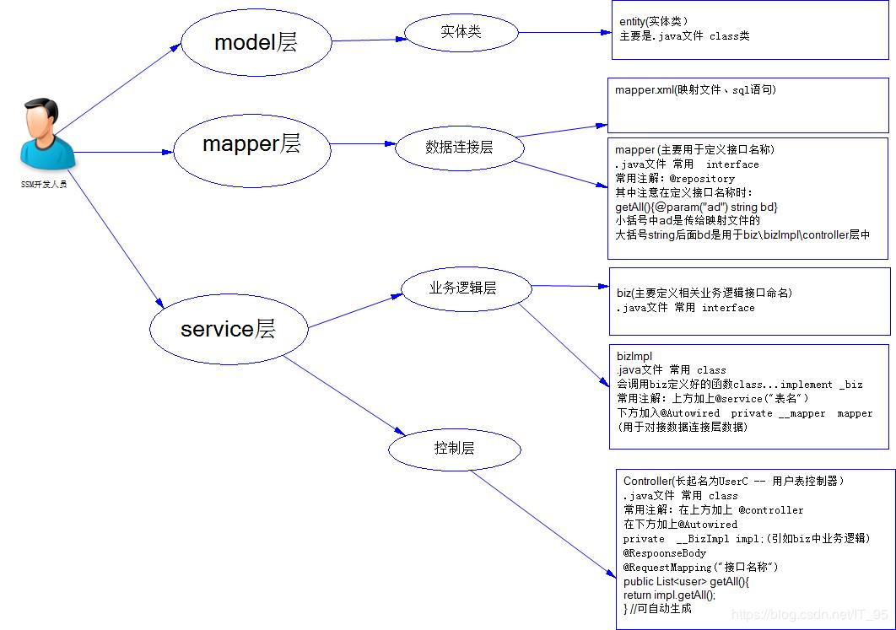
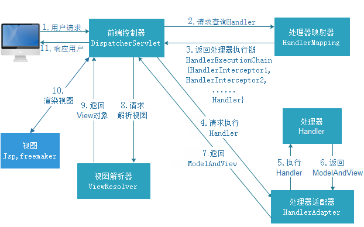

原文连接:https://www.cnblogs.com/21-forever/p/11417406.html
一、在框架中有时候会发现dao层和service层是相同的代码，为什么会同时存在呢？（以下https://blog.csdn.net/fanjieshanghai/article/details/88219652侵删）
1、service是业务层，dao是数据访问层。
记得以前刚学编程的时候，都是在service里直接调用dao，service里面就new一个dao类对象，调用，其他有意义的事没做，也不明白有这个有什么用，参加工作久了以后就会知道，业务才是工作中的重中之重。
我们都知道，标准主流现在的编程方式都是采用MVC综合设计模式，MVC本身不属于设计模式的一种，它描述的是一种结构，最终目的达到解耦，解耦说的意思是你更改某一层代码，不会影响我其他层代码，如果你会像spring这样的框架，你会了解面向接口编程，表示层调用控制层，控制层调用业务层，业务层调用数据访问层。初期也许都是new对象去调用下一层，比如你在业务层new一个DAO类的对象，调用DAO类方法访问数据库，这样写是不对的，因为在业务层中是不应该含有具体对象，最多只能有引用，如果有具体对象存在，就耦合了。当那个对象不存在，我还要修改业务的代码，这不符合逻辑。好比主板上内存坏了，我换内存，没必要连主板一起换。我不用知道内存是哪家生产，不用知道多大容量，只要是内存都可以插上这个接口使用。这就是MVC的意义。
接下来说service的意义，其实因为你现在做东西分层次不是那么严格，在一个你们做东西业务本身也少，举个最简单的例子，你做一个分页的功能，数据1000条，你20条在一个页，你可以把这个功能写成工具类封装起来，然后在业务层里调用这个封装的方法，这才是业务里真正干得事，只要没访问数据库的，都要在业务里写。
2、DAO接口
为每个DAO声明接口的好处在于：
①、可以在尚未实现具体DAO的时候编写上层代码,如Service里对DAO的调用
②、可以为DAO进行多实现,例如有JDBCDAO实现,MyBatisDAO实现,而不需要更改上层代码,只需要简单的在Spring的IoC配置里修改一下注入的DAO实现
3、Service接口
①、可以在尚未实现具体Service情况下编写上层改代码,如Controller对Service的调用
②、Spring无论是AOP还是事务管理的实现都是基于动态代理的,而动态代理的实现依赖于接口,所以必须有接口的定义才能使用这些功能
③、可以对Service进行多实现
详见（https://www.jianshu.com/p/64abdd29bdf6 侵删）
至于为什么service层要使用接口来定义有以下几点好处：
-
在java中接口是多继承的，而类是单继承的，如果你需要一个类实现多个service，你用接口可以实现，用类定义service就没那么灵活
-
要提供不同的数据库的服务时，我们只需要面对接口用不同的类实现即可，而不用重复地定义类
-
编程规范问题，接口化的编程为的就是将实现封装起来，然调用者只关心接口不关心实现，也就是“高内聚，低耦合”的思想。
二、SSM框架接口速记：

（https://blog.csdn.net/it_95/article/details/84103285侵删）
三、一篇详细介绍的文章
https://www.cnblogs.com/shamo89/p/7090542.html（侵删）
四、有关拦截器、过滤器和监听器：
1、过滤器：
依赖于servlet容器，在实现上基于函数的回调，可以对几乎所有的请求进行过滤，但是缺点就是一个过滤器实例只能在容器初始化时调用一次。
使用过滤器的目的是用来做一些过滤操作，获取我们想要获取的数据，比如：在过滤器中修改字符编码；修改request的一些参数，包括：过滤低俗文字、危险字符等。
2、拦截器：
依赖于web框架，在springMVC中就是依赖于SpringMVC框架。在实际上基于Java的反射机制，属于面向编程（AOP）的一种运用。
由于拦截器是基于web框架的调用，因此可以使用Spring的依赖注入进行一些业务操作，同时一个拦截器实例在一个controller生命周期内可以多次调用。
但是缺点是只能对controller请求进行拦截，对其他的一些比如直接访问静态资源的请求则没有办法进行拦截。
3、监听器：
一种Servlet中的特殊的类，它们能帮助开发者监听web中的特定事件，实现了javax.servlet.ServletContextListener 接口的服务器端程序，
它也是随web应用的启动而启动，只初始化一次，随web应用的停止而销毁。
主要作用是：感知到包括request(请求域)，session(会话域)和applicaiton(应用程序)的初始化和属性的变化。

https://blog.csdn.net/learning__java/article/details/92566869 侵删
五、SpringMVC
